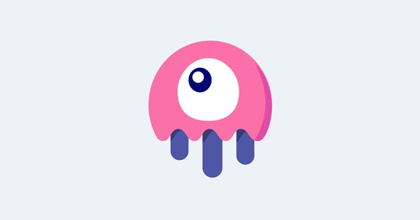
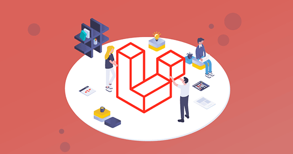
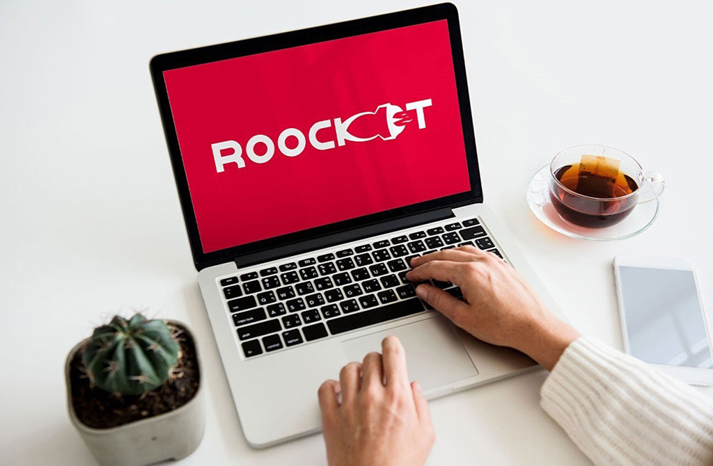

آموزش Livewire
در دوره آموزش livewire ما سعی داریم livewire که یک فریمورک laravel به حساب میآید را به شکل قدم به قدم و جامع به شما آموزش دهیم .

آموزش پروژه محور لاراول
آموزش لاراول آن هم با پروژه در یک آموزش پروژه محور لاراول یک شانس برای یادگیری بهتر و کاربردیتر لاراول محسوب میشود که در این دوره قصد اینکار را داری...
آموزش پروژه محور جاوا اسکریپت
در دوره پروژههای جاوااسکریپت ما سعی کردهایم جاوااسکریپت را در قالب پروژههای بزرگ و کوچک، ساده و پیشرفته به شما آموزش دهیم.

بحث و گفتگو
- محاسبه کردن قیمت وبسایت های فروشگاهی
- دیکود کردن کد php
- دریافت api از سایت دیگر
- ارور ۵۰۰ میده سایت لاراولیم
آخرین ویدیوهای آموزشی
- پیادهسازی Loading و نمایش ارورها
- مدیریت کردن ارورهای HTTP
- آشنایی با interceptors
- ارسال پارامتر به همراه url
طراحی وب
چه تفاوتی بین UX ، UI و CX وجود دارد؟
۱۰ عنصر HTML که شاید ندانید که به آنها نیاز دارید
سوالات متداول شما درباره آموزش برنامه نویسی
- چرا یک برنامه نویس شویم ؟
- آیا یادگیری برنامه نویسی ارزشاش را دارد؟
- آموزش برنامه نویسی چقدر زمان میبرد؟
- آیا برنامه نویسی درآمد خوبی دارد؟
سوالات و گفتگوها
- استفاده از هدر و فوتر قالب در پلاگین خودم
- طراحی دمو های تم وردپرس
- مشکل dispatch alphine js
- آپلود آواتار در وردپرس